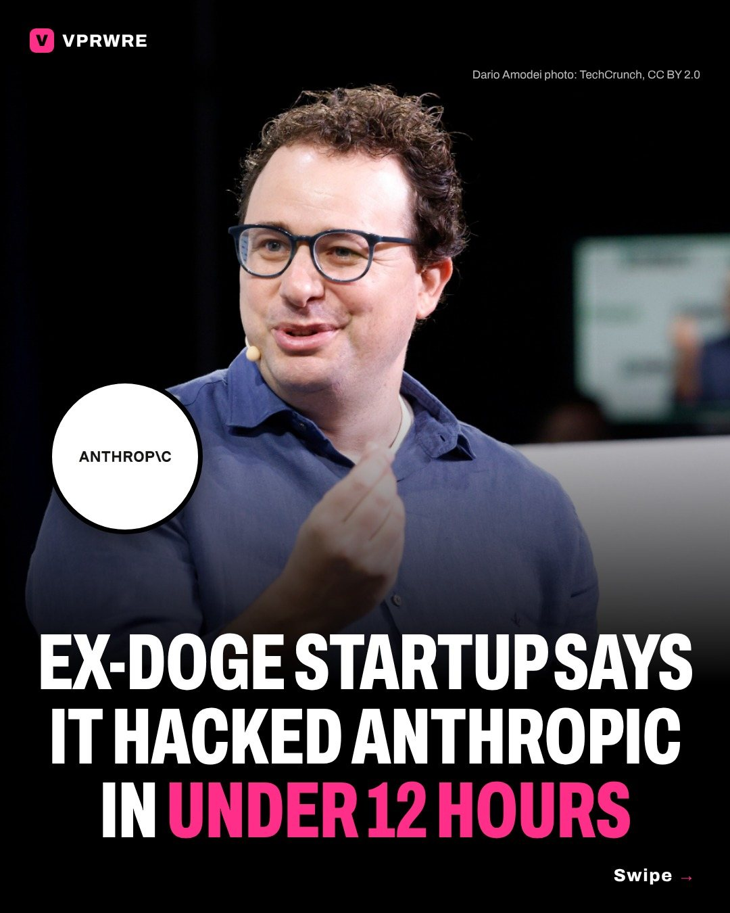

Policy
Ex-DOGE startup says it hacked Anthropic in under 12 hours
Ex-DOGE startup says its AI reached Anthropic systems in under 12 hours.

Cathedral, a months-old cybersecurity startup founded by four former DOGE staffers, told Anthropic its researchers had gotten into sensitive internal systems, according to a draft report seen by The Washington Post.
The twist: Cathedral was testing Anthropic under its bug bounty, a program that rewards researchers for finding security holes.
Anthropic says Cathedral spent days failing to breach its software directly. So Cathedral’s AI agents went after the third-party business software Anthropic uses instead. In under 12 hours, Cathedral says, they found paths to meeting transcripts, salaries and job offers, and Slack messages.
Anthropic confirmed the researchers reached a “limited set” of its sales, HR and IT systems, including customer and partner business contact information and some basic user account records, but says they didn’t access Claude users’ conversations, source code or model weights.
Now the two are at odds. Anthropic says Cathedral broke the program’s rules by not disclosing the full extent of its activity. Cathedral’s report says the weaknesses it found “should be a wake-up call for every company in America.” Anthropic says its own monitoring flagged some of Cathedral’s activity, it disabled the affected software the same day, and it found no sign anyone else exploited the flaws, Tech Times reports.
Cathedral has raised $160 million from investors including Andreessen Horowitz and Sequoia, and Marc Andreessen sits on its board, Gizmodo reports. PitchBook values it at $1.4 billion. A senior Trump administration official, speaking anonymously, told The Washington Post the findings raised national security concerns. Anthropic says Cathedral overstated the national-security implications.
Is your company’s software any safer?
The carousel
10 slides · Open on Instagram
Disclosure: VPRWRE drafts with Claude, Anthropic’s AI.